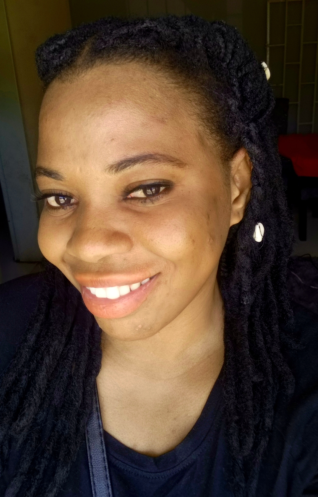

Nandila Mulilalila
Software Engineer & Graphic Designer
Software Engineer & Graphic Designer


Hello there! I'm a software engineer and graphic designer on a mission to blend creativity and code into innovative digital experiences. Ever since I was a child, I was drawn to both art and technology. My journey began with doodles on paper and evolved into crafting pixel-perfect designs on a computer screen. The world of graphic design allowed me to express my artistic side, shaping visuals that tell compelling stories and evoke emotions. But I didn't stop there. I realized that the real magic happens when design meets functionality. That's when I delved into the world of software engineering, learning to breathe life into my creations through code. I thrive on solving complex problems and turning abstract concepts into user-friendly applications. Whether it's developing interactive websites, designing intuitive user interfaces, or optimizing algorithms, I'm always up for the challenge.
My career has been a fascinating journey of constant learning and growth. From mastering design tools to diving into programming languages, I believe in staying at the forefront of technology trends. In a fast-paced industry like ours, adaptability is key, and I'm always excited to embrace the next big thing. Away from the screen, you'll find me exploring the intersection of art and technology in the real world. I'm a passionate advocate for diversity in tech. I firmly believe that the more diverse our perspectives, the more innovative our solutions become. So, if you're looking for someone to bring your digital dreams to life, or you simply want to geek out over the latest design trends, feel free to reach out. Let's collaborate and create something